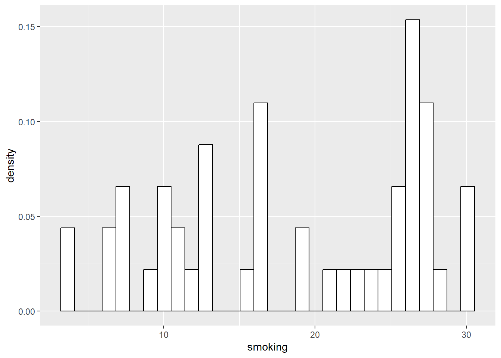
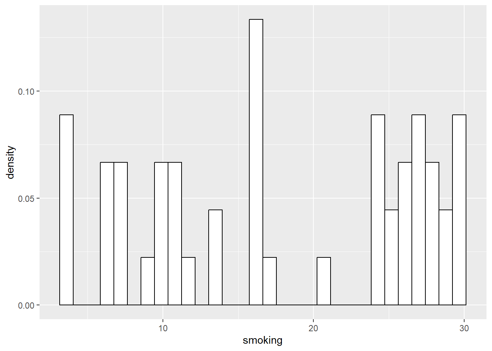
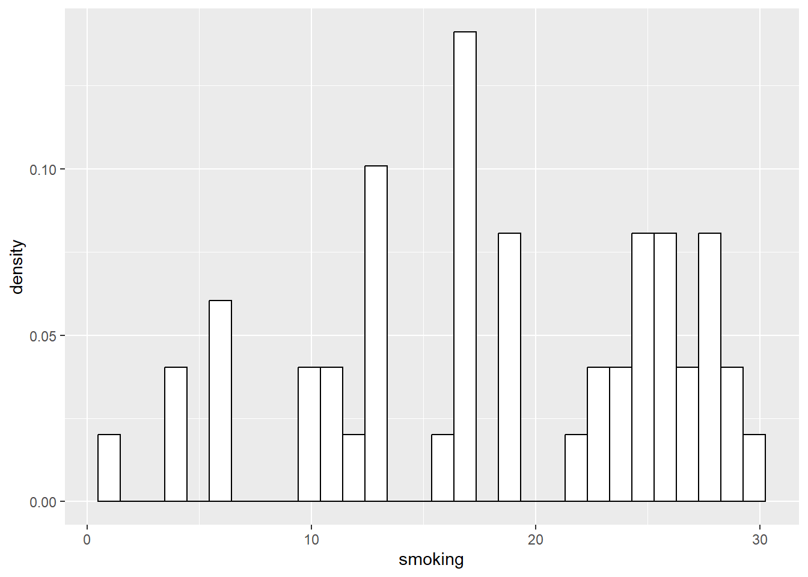
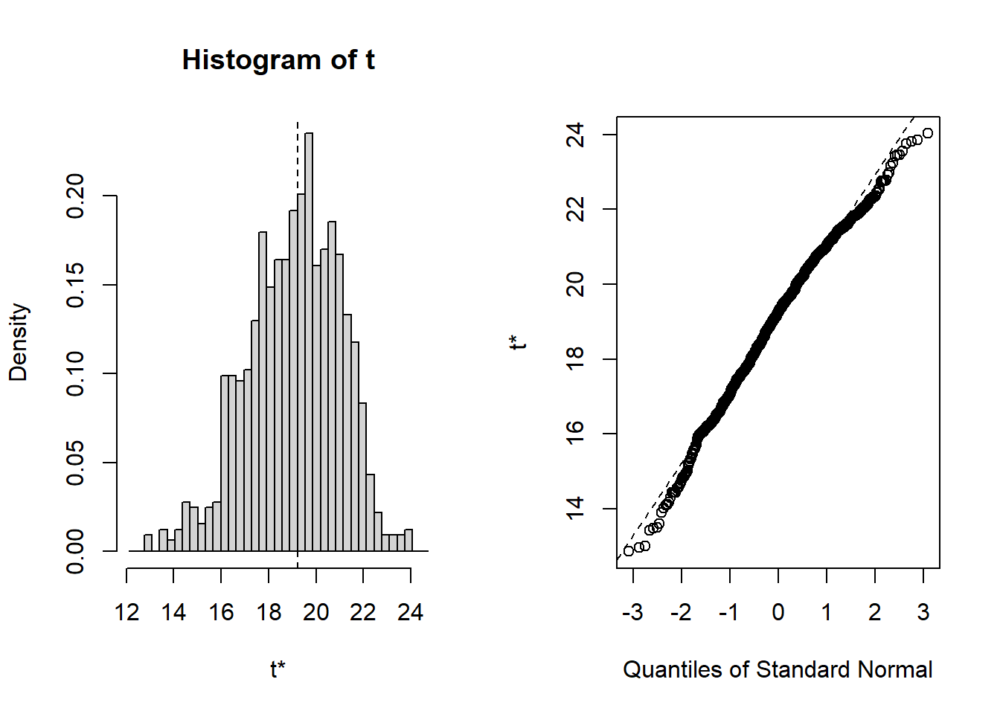
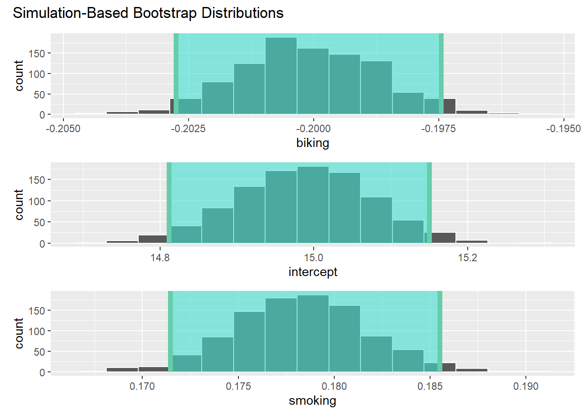

Chapter 6 Introduction to Bootstrapping
This Chapter relates to the second part of Lecture 6.In this chapter, you will learn the core concepts of bootstrapping. That is, creating synthetic sampling distributions through multiple resampling (with replacement) of a single sample.
The basic process is fairly simple, once you have your original sample, and has the following characteristics:
- A bootstrap sample has an equal probability of randomly drawing any of the original sample elements (data points).
- Each element can be selected more than once - because the sample is done with replacement.
- Each resampled data set (the new sample) is the same size as the original one.
First, I will demonstrate the basic principle.
Recall from the last chapter that there was a simulated data set of 498 people, with variables representing smoking, biking, and heart disease.
We treated this as the population and then sampled from it to demonstrate uncertainty at different sample sizes.
So, let’s take the sample of 50 that we drew from that ‘population’ of 498, and imagine that we got this sample by (for example) doing a survey of the population (of 498), and this is our data set for analysis.
First we will remind ourselves of the properties and distribution of our sample, the median, mean, and distribution:
## [1] 16.88572## [1] 17.59577Ok, there we go. Remember, this sample is our ‘data set’ for analysis. Remember, it represents a sample of 50 cases from a population of 498.
We know the median and mean, but we have no real indication of the uncertainty in those estimates. What I mean is, without information about the population mean and median (which of course we would not have in a real-life sampling situation), we cannot know how close the sample median and mean are to the population mean and median.
In order to estimate that information, we will eventually use the bootstrap method. For now, we are just going to demonstrate the basic idea.
So, what we do now is draw another random sample of 50. However, we don’t draw it from the population, we instad draw the new sample of 50 from our existing sample of 50.
That sounds weird to many people, and at first they often say ‘but how can it be different from your original 50??’. The trick is that each time we draw a data point, we replace it back, so we are always drawing our sample from the full 50. This is called sampling with replacement.
In this way, the new sample can only contain values which were in the original sample, but can contain different frequencies of those values. Or in other words, each value can occur many different times, and that number of times may be different to the original sample. So the distribution of values in this new sample will be different to the original sample, and the statistics will therefore also be different.
Let’s draw this new sample, take the median and mean of the sample, and plot it:
## # A tibble: 50 × 4
## ...1 biking smoking heart.disease
## <dbl> <dbl> <dbl> <dbl>
## 1 260 37.7 26.3 11.2
## 2 200 12.9 25.2 16.3
## 3 184 72.4 7.52 1.87
## 4 43 9.67 3.50 12.9
## 5 439 63.8 9.91 3.40
## 6 35 20.2 10.3 13.4
## 7 227 62.8 15.2 4.93
## 8 202 10.3 27.6 17.4
## 9 116 25.8 28.5 14.4
## 10 258 10.7 16.5 15.4
## # ℹ 40 more rows## [1] 19.01623## [1] 18.61403
Marvelous! Now, for the purpose of example, let’s draw two more of these resamples from the original 50, take their median and mean, and plot the distributions…
## # A tibble: 50 × 4
## ...1 biking smoking heart.disease
## <dbl> <dbl> <dbl> <dbl>
## 1 422 25.9 16.2 13.6
## 2 70 22.9 24.6 16.2
## 3 491 50.8 6.03 5.59
## 4 70 22.9 24.6 16.2
## 5 71 59.8 8.70 5.69
## 6 362 49.9 3.86 5.33
## 7 258 10.7 16.5 15.4
## 8 154 28.8 11.4 12.8
## 9 357 19.4 6.12 11.5
## 10 439 63.8 9.91 3.40
## # ℹ 40 more rows## [1] 16.49644## [1] 17.96043
## # A tibble: 50 × 4
## ...1 biking smoking heart.disease
## <dbl> <dbl> <dbl> <dbl>
## 1 200 12.9 25.2 16.3
## 2 416 38.1 17.0 8.35
## 3 488 69.9 26.0 6.76
## 4 200 12.9 25.2 16.3
## 5 164 70.9 29.9 6.34
## 6 126 4.68 11.0 15.9
## 7 163 14.7 9.83 13.3
## 8 174 60.0 25.5 7.47
## 9 83 30.5 12.4 11.1
## 10 468 56.2 19.2 6.51
## # ℹ 40 more rows## [1] 19.01623## [1] 18.51875
Now, if we return to the slides, we can build a table using these mean and median values. Of course, the slide deck will have slightly different values, since it’s based on a different run of the resampling process, but the principle is the same.
So, this is the basic idea of bootstrapping. We sample with replacement from our original sample, many many times. We did 3 here manually, but we generally use a program to do this many more times, such as a thousand or more.
6.1 Bootstrapping in the Context of Previous Examples
To further reinforce the point, let’s now place ourselves in the position of three different researchers, each of varying levels of enthusiasm, and all three are researching the same population of 498 people that we have already explored in the last few examples.
Researcher 1 is a little like me as a Ph.D. student, and maybe more interested in ‘experiencing life’. So, he has little time to actually collect data, and not much more enthusiasm for it. In the end, he manages to take a sample of 10 people from the population of 498.
Researcher 2 is a bit more enthusiastic, and gets a sample of 50.
Researcher 3 is fairly conscientious, and takes a sample of 200 from the population of 498.
Now, what we can do, is run 1000 bootstrap replications of each of these varying-sized subsamples of the population, to see what might happen:
First, the 10:
##
## ORDINARY NONPARAMETRIC BOOTSTRAP
##
##
## Call:
## boot(data = sub.10, statistic = f1, R = 1000)
##
##
## Bootstrap Statistics :
## original bias std. error
## t1* 19.21726 -0.1364102 1.931552
## BOOTSTRAP CONFIDENCE INTERVAL CALCULATIONS
## Based on 1000 bootstrap replicates
##
## CALL :
## boot.ci(boot.out = results, type = "norm")
##
## Intervals :
## Level Normal
## 95% (15.57, 23.14 )
## Calculations and Intervals on Original ScaleNow let’s do it for the other two subsamples of n=50, and n=200
##
## ORDINARY NONPARAMETRIC BOOTSTRAP
##
##
## Call:
## boot(data = sub.50, statistic = f1, R = 1000)
##
##
## Bootstrap Statistics :
## original bias std. error
## t1* 17.59577 0.01985797 1.188096## BOOTSTRAP CONFIDENCE INTERVAL CALCULATIONS
## Based on 1000 bootstrap replicates
##
## CALL :
## boot.ci(boot.out = results, type = "norm")
##
## Intervals :
## Level Normal
## 95% (15.25, 19.90 )
## Calculations and Intervals on Original Scale##
## ORDINARY NONPARAMETRIC BOOTSTRAP
##
##
## Call:
## boot(data = sub.200, statistic = f1, R = 1000)
##
##
## Bootstrap Statistics :
## original bias std. error
## t1* 15.04145 -0.01921503 0.5954731## BOOTSTRAP CONFIDENCE INTERVAL CALCULATIONS
## Based on 1000 bootstrap replicates
##
## CALL :
## boot.ci(boot.out = results, type = "norm")
##
## Intervals :
## Level Normal
## 95% (13.89, 16.23 )
## Calculations and Intervals on Original ScaleWe’ll now build a table with these values back in the slide deck. Again, remember the values in the slide deck will differ from these due to the randomness of the process.
###Bootstrapping the Original Sample
Now, let’s shift our minds a bit, and consider that the data set of 498 actually represents a sample of a larger population (remember from the last chapter, it’s simulated, but meant to represent a sample from the population).
So, let’s bring in Researcher 4, the most conscientious of all. She is the one who manages to take a sample of 498 people from the population. And, finally, we can bootstrap the original full sample of 498:
##
## ORDINARY NONPARAMETRIC BOOTSTRAP
##
##
## Call:
## boot(data = Heart, statistic = f1, R = 1000)
##
##
## Bootstrap Statistics :
## original bias std. error
## t1* 15.43503 0.001437866 0.359051
## BOOTSTRAP CONFIDENCE INTERVAL CALCULATIONS
## Based on 1000 bootstrap replicates
##
## CALL :
## boot.ci(boot.out = results, type = "norm")
##
## Intervals :
## Level Normal
## 95% (14.73, 16.14 )
## Calculations and Intervals on Original ScaleThis is a very nice set of results, which can tell us many interesting things. So let’s go back to the slides…..
6.2 Bootstrapping Other Stuff…
We have so far only bootstrapped the mean. However, the basic principle can be applied to virtually any statistical estimate. So, we can revisit some of our prior analyses, and use the bootstrap method to quantify the uncertainty in the estimates that we previously accepted without really thinking too hard about them.
6.2.1 Correlations
First, let’s revisit our recent correlation analysis of Happiness and GDP per capita.
## # A tibble: 6 × 4
## Country Happiness GDPpc Pop
## <chr> <dbl> <dbl> <dbl>
## 1 Afghanistan 2.4 1971 38972236
## 2 Albania 5.2 13192 2866850
## 3 Algeria 5.12 10735 43451668
## 4 American Samoa NA NA 46216
## 5 Andorra NA NA 77723
## 6 Angola NA 6110 33428490## vars n mean sd median trimmed mad
## Country* 1 249 125.00 72.02 125.00 125.00 91.92
## Happiness 2 153 5.49 1.12 5.53 5.52 1.16
## GDPpc 3 197 20463.88 20717.34 12655.00 17037.01 13338.95
## Pop 4 242 59178643.60 331869505.09 5596196.00 12318073.38 8185922.38
## min max range skew kurtosis se
## Country* 1.0 2.490000e+02 2.480000e+02 0.00 -1.21 4.56
## Happiness 2.4 7.820000e+00 5.420000e+00 -0.26 -0.38 0.09
## GDPpc 731.0 1.125570e+05 1.118260e+05 1.58 2.55 1476.05
## Pop 809.0 4.663087e+09 4.663086e+09 11.65 152.44 21333379.77If we run the same analysis as in Chapter 2, we’ll get the same results: Correlation R = 0.75

Now, let’s take uncertainty into account, by bootstrapping that correlation and creating some confidence intervals.

## # A tibble: 1 × 2
## lower_ci upper_ci
## <dbl> <dbl>
## 1 0.689 0.811## Response: Happiness (numeric)
## Explanatory: GDPpc (numeric)
## # A tibble: 1 × 1
## stat
## <dbl>
## 1 0.745So, you can see the correlation is 0.75 with a 95% confidence interval of 0.69 - 0.81
Now, let’s extend this to the multiple regression case we have previously used, examining the relationships between smoking, biking, and heart disease.
## # A tibble: 6 × 4
## ...1 biking smoking heart.disease
## <dbl> <dbl> <dbl> <dbl>
## 1 1 30.8 10.9 11.8
## 2 2 65.1 2.22 2.85
## 3 3 1.96 17.6 17.2
## 4 4 44.8 2.80 6.82
## 5 5 69.4 16.0 4.06
## 6 6 54.4 29.3 9.55## vars n mean sd median trimmed mad min max range
## ...1 1 498 249.50 143.90 249.50 249.50 184.58 1.00 498.00 497.00
## biking 2 498 37.79 21.48 35.82 37.71 27.51 1.12 74.91 73.79
## smoking 3 498 15.44 8.29 15.81 15.47 10.86 0.53 29.95 29.42
## heart.disease 4 498 10.17 4.57 10.39 10.18 5.42 0.55 20.45 19.90
## skew kurtosis se
## ...1 0.00 -1.21 6.45
## biking 0.07 -1.22 0.96
## smoking -0.04 -1.12 0.37
## heart.disease -0.03 -0.93 0.20Here, we need to calculate multiple confidence intervals as we have multiple estimates.

## # A tibble: 3 × 2
## term estimate
## <chr> <dbl>
## 1 intercept 15.0
## 2 smoking 0.178
## 3 biking -0.200## # A tibble: 3 × 3
## term lower_ci upper_ci
## <chr> <dbl> <dbl>
## 1 biking -0.203 -0.197
## 2 intercept 14.8 15.1
## 3 smoking 0.171 0.186It’s worth reflecting on exactly what these conflidence intervals mean, and to do so, we can move back to the slides…